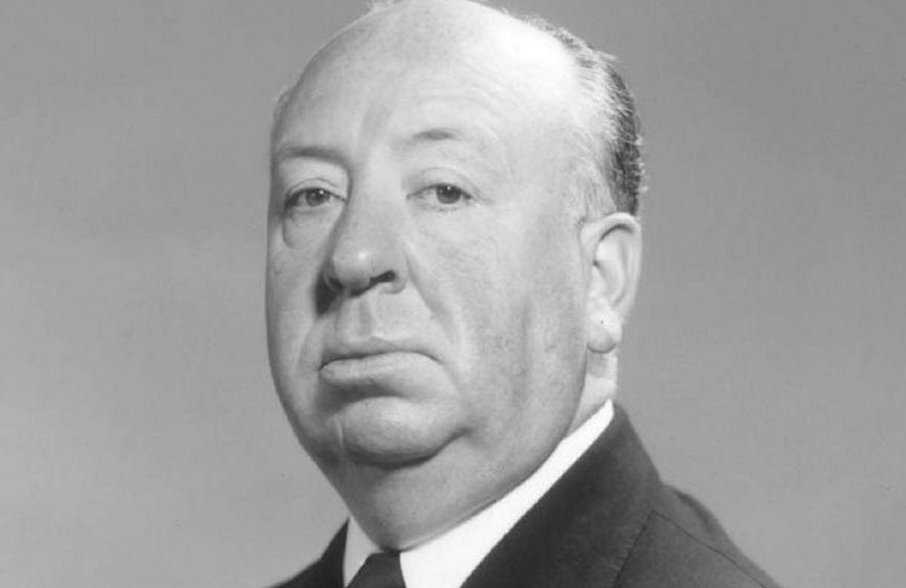
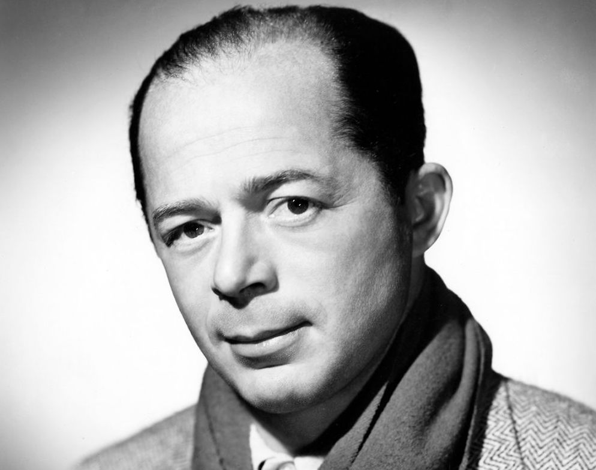
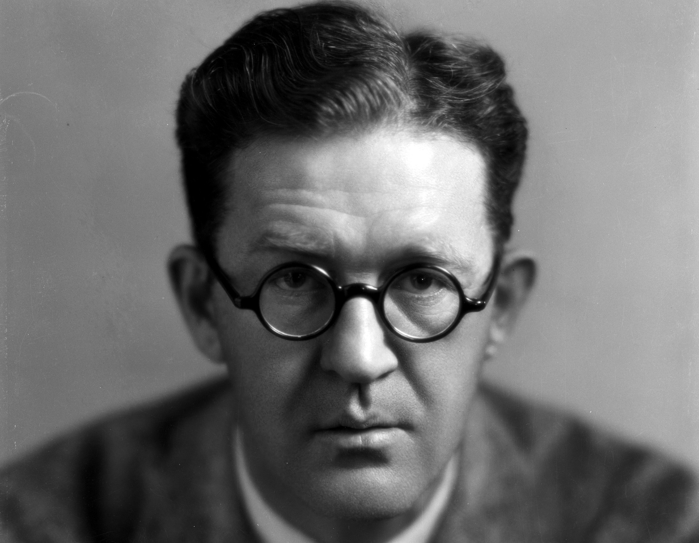

Introduction
The introduction of the sounds age, in 1927, age birth to a new Hollywood or The Golden Age of Hollywood. This period of time saw a great increase in the technical and entertainment quality of films. The creative minds of this time were behind masterpieces such as Gone with the Wind, Citizen Kane and Psycho. Here are a few directors that helped to make The Golden Age an Iconic period in American Film.
Directors
Alfred Hitchcock
the Master of Suspense
Hitchcock's first attempt at directing was in 1925’s The Pleasure Garden. Two years later, Hitch released the thriller The Lodger, a film that carries many elements that would become his trademarks in most of his films, such as an innocent main character who is falsely accused of a crime and the first of the director’s famous cameo appearances.
His film Rebecca would win him a Best Picture at the Oscars and earn him a nod for directing. Although Hitch received four other nominations as Best Director, for Lifeboat, Spellbound, Rear Window and Psycho and was also behind countless other classics such as The Birdsand, Vertigo, and Notorious he astonishingly never won an Academy Award.
Billy Wilder
the Cinematic Genius
Wilder, during his early years in the USA, had much success screenwriting with partnership Charles Brackett. They collaborated on such classics as Ninotchka and Ball of Fire.
The first American film he directed was 1942’s delightful romantic-comedy The Major and the Minor, followed by the war thriller Five Graves to Cairo and then by the all-time Film Noir classic Double Indemnity. During his long career, Wilder created the masterpieces The Lost Weekend, Sunset Blvd and Some Like it Hot; among many others. This lengthy career and diverse film history made him one of the most celebrated names of filmmaking History.
John Ford
American Visionary
Ford is among the most revered American directors of all time, with an incredible 145 efforts in film-directing with a majority being westerns. This first film directed under the name John Ford was his first masterpiece: The Iron Horse.
The 1930’s brought Ford to 20th Century Fox, where he would produce some of his most acclaimed films such as The Grapes of Wrath, How Green was My Valley, and Stagecoach. The Quiet Man, The Man Who Shot Liberty Valance and The Searchers are just a few other acclaimed titles to his credit. Ford won four Academy Awards for best director and one of the men who helped to create American Film imagery.
